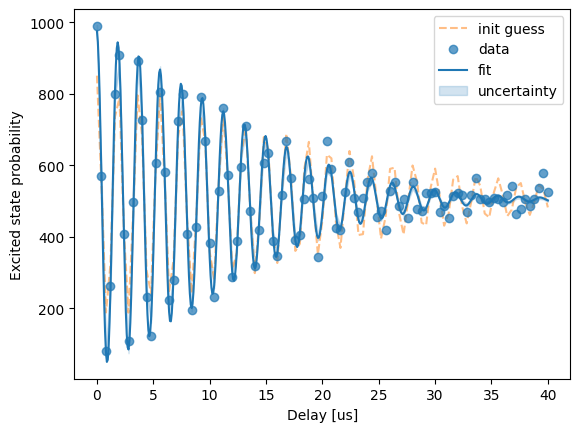

Plotting the analysed data#
We have learnt how to write analysis functions in the analysis chapter, and we have seen simple
PlotDefinition examples in the prototyping
chapter. It is time to explore the topic more!
Why is plotting split from the rest of analysis?#
There are two main reasons:
Plots are a means of communication between humans. We acquire information through our senses, like in this case, our eyes via looking at the plot. The automated calibration procedure running on a large QPU does not need to make plots, because it does not need to look at them. All the information is already there in the data.
Making plots might be a lot more computationally expensive than analysing the raw data. Making a bar plot of all the result bitstring counts from a 10 qubit experiment takes significantly longer than calculating the fidelity, XORing, or fitting the data. It is just expensive to do that.
In short, plotting is separate because most often we do not have to and we do not want to do it.
When writing a plotting function, you should all the time think of the users of the experiment class. This includes yourself, your colleagues and whoever would run the experiment in the future. This makes this plotting more art than science – it is a lot more subjective.
Syntax and arguments#
What is attached to your AnalyzeResult is a
PlotDefinition object. This object contains the plotting function
and a dictionary of default keyword arguments.
The plotting function is only required to have one argument, and that is run_result, which takes the whole
RunResult object generated by your run, and returns a plot. Additional arguments can
be added, and they generally should be provided in the dictionary to the plot definition.
To decide, what those arguments should be, consider how they can be used. After analysing your experiment run, you
get an AnalyzeResult object. Then, you can call:
analyze_result.plot(plot_name, kwarg1=val1, kwarg2=val2)
And this replaces the default values of those two arguments. Combine this with the fact that plots are used to communicate between humans, and it becomes clear that these arguments should be something that humans can be realistically expected to change. For example, an entire 3D data array is a bad keyword argument - no one will be plugging their own data there. The plotting function is attached to this specific experiment.
Maybe your experiment sweeps two settings in a pointwise sweep, and it is a bit of an arbitrary choice which one of them should be the X-axis? Include a kwarg to select for that! Maybe there are multiple data arrays being generated, and the plot could be cleaner if some of them are not included, but then they are not included? Include a kwarg that controls that.
Additionally, the plotting functions do not automatically work with parallel experiments. So if your experiment is
meant to be run on multiple qubits, or pairs of qubits, you should include an argument group, which lets the
function know which data to plot.
Everything else, all raw data, options, all analyzed data variables, is already included in the RunResult.
Your plotting function should just extract it from there.
If you’re using matplotlib to make your plots, remember to wrap the function with wrap_mpl_plot().
Let’s now have another look at our old plotting function from the Bell experiment:
import matplotlib.pyplot as plt
from exa.core import wrap_mpl_plot
@wrap_mpl_plot
def plot_bell_data_with_fit(
run_result,
target_qubit,
):
fig = plt.figure()
run_result.dataset[f"{target_qubit}_excited_state_probability"].plot(
marker="o", linewidth=0, alpha=0.5, label="data"
)
run_result.dataset[f"{target_qubit}_excited_state_probability_fit"].plot(color="C0", label="fit")
plt.title(f"{run_result.run_definition.experiment_label} for {target_qubit} \nrun_id={run_result.run_definition.run_id}")
return fig
We can see that:
It only has one extra argument:
target_qubit.It extracts the required data and the fit from
run_result.dataset.It is wrapped to return the correct object. The function itself returns a Matplotlib Figure, but that is wrapped to return an EXA Figure. The figure will look the same, but the framework needs some additional functionality, which the EXA Figure has.
The title includes the experiment label (to let other users know what experiment created the plot) and the run_id (to let other users know what specific data, available for them in the database, has been used to create this plot) in the figure title. Other users tend to share plots with little context, and having the run id allows access to the data, as long as you’re connected to the same database.
It is however not perfect, as for example 'excited_state_probability' variable is referred to via a string,
instead of the global constant.
As a reminder, this is how the plot definition is then attached to the analyze result:
from exa.core import PlotDefinition
analyze_result.plots[f"{qubit}_bell"] = PlotDefinition(
plotting_function,
{
"target_qubit": qubit,
"other_kwarg_0": val_0,
"other_kwarg_1": val_1,
}
)
Making the plots#
Keeping all the above in mind, we should be able to create some plots. The most common library to make plots in Python is Matplotlib, and it is generally recommended to use it here as well. This is not a guide to use Matplotlib, however. Fortunately, there is a well maintained Matplotlib user guide you can reference instead.
Let’s now go through some general good practices when making plots.
Keep analysis and plotting separate!#
Sometimes, it might be tempting to do some additional analysis in the plotting function, to generate an auxiliary data variable to plot. If this is something on the level of binning the data for a histogram plot, it is fine to do. However, doing any “serious” analysis in the plotting function is heavily discouraged. Running an experiment, plotting the results, and then finding out that the plotted variables are missing from the dataset is extremely annoying! If something is a good representation of the experiment result, it should be in the dataset. As a baseline, try to only extract already analyzed variables from the dataset, and just create the plots in the plotting function, breaking this rule only for a very good reason.
As plots are created at the end of analysis, and testing analysis is quite difficult, you should make sure to manually test your plotting functions as much as possible. Keeping the data variables in the dataset also means you need a mock dataset to unit test your plots, which makes testing them not really straightforward.
Using generic plot definitions#
A long time ago, we wanted to make plotting fully generic. This isn’t really possible. But it resulted in the
existence of the generic_plot_definition(). This function
only takes the data variable name you want plotted, and does the rest, including finding the fits in the dataset,
labelling the axes and adding an informative legend with all the fit parameters. It may be useful when prototyping
a new experiment or supporting a rarely used functionality.
from exa.core.analyze_result import generic_plot_definition
analyze_result.plots[f"{qubit}"] = generic_plot_definition(
str(observation_da.name), title=f"Observation of {qubit} under Conditions"
)
As explained in the analysis chapter, Model Selection Fitter makes good default plots, which have a bit more information in them. The plot always contains the data, the fit, initial guess and a confidence interval. Here is an example from the \(T_2\) experiment fitting described in the previous chapter:

As you can see, this plot is perfectly enough in prototypes but also in mature experiments which do not use extra sweeps. Be careful when analysing over extra dimensions - you get a plot per sweep spot! That may be too many plots and you will need to make another, custom plot anyway.#
Stick to scientific good practices#
I am just going to list some basic scientific good practices here, which I am sure you’re well aware of. These also apply to default experiment plots – they are scientific plots!
Put informative labels on all axes of the plot, and use a unit every time. The unit should be the actual unit corresponding to the data. E.g. if you multiply the X axis by 1 billion to convert from seconds to nanoseconds, you should also change the unit from [s] to [ns].
Do not connect raw data points with lines / segments. The lines are for the fits and theoretical models.
Add informative and clear legends to your plots. If a particular data variable is associated with a number, for example fits typically have parameters, include the most important ones in the legend, especially if there are more than one different fits.
If possible, and it does not make the figure too crowded, plot uncertainty and error. For data points, add errorbars, which can be done with Matplotlib errorbar function, and for fits, use fill, which can be done with the fill_between function.
Accessibility#
Different people view colours in different ways. Those, whose ability to distinguish between different colours is significantly decreased compared to a typical one, are referred to as colour blind. There are at least 10 different kinds of colour blindness.
The default Matplotlib colour cycle is pretty colour-blind-friendly, but different users might have different
preferences. For that reason, avoid hard-coding colours in your plots. Let users individually override their
global Matplotlib colour cycle, so that it fits their individual wants and needs. This can be done through
a modification to rcParams['axes.prop_cycle']. Avoid using too many colours: if plotting too many variables,
consider if a 2D plot is not more appropriate. For plotting many different raw data sets, consider using different marker
shapes.
Note
Q: What if I want multiple things to be the same colour? I have to pick one!
A: Not really! Instead of specifying a colour, you can use the “CN” colour spec where “C” precedes a number acting as an index into the colour property cycle. This allows you to make the data points, the fit, and the uncertainty band the same colour, with possibly different transparency settings, without actually fixing what the colour is.
The default colour maps for the 2D plots are not so easy to change globally. You may decide to include a plotting function
keyword argument like cmap to allow different colour maps.
Keep in mind that some people might find it hard to read very small font. Again, the default Matplotlib font size is pretty fine for most uses. Sometimes however you might find yourself making the plot bigger, and then that large plot is rescaled to fit on someone’s smaller screen, making the font smaller than intended.
Using xarray#
The dataset is an xarray.Dataset object, and xarray supports Matplotlib-based plotting directly through
the plot() method, like demonstrated in the example plotting function for the Bell experiment. This can be useful,
as the X and Y plot labels are automatically filled with data variable labels, and colour bars are generated on the
2D plots. See the Xarray user plotting guide for more
details.
Multiple plots vs subplots#
You can add any number of plots to your AnalyzeResult. The user can
use the plot_all() method to plot all the plots or
render_report() method to see all the plots and
observations, but these do not allow changing arguments.
If your experiment needs two or more different visual representations, think if they are fundamentally independent or not. If they should be viewed together, and you cannot imagine talking about one without seeing the other, consider making them subplots of the same figure. If they are however representing different aspects of the experiment, maybe having separate plotting functions and separate plot definitions is better. The latter is also more friendly for code reuse, as these same plotting functions might be attached to multiple experiments.
Support for extra sweeps#
Typically, a presence of an extra sweep makes your hand-crafted default plot not work. The data has an additional dimension, after all! There are things you can still do.
First, if your experiment produces some observations, which are typically single numbers, with extra sweeps those observations are now arrays. Those can be plotted. Consider adding an extra plotting function for when there is one (or more, but it is harder to support more) extra sweep.
Additionally, you might want to add an argument like selection_dict to your plotting function, which is then used
inside it to select a slice of data such that the original plot can still be made. This can be done using the sel()
method of xarray Datasets and DataArrays. This is the most meaningful if a single “best slice” in your experiment
can be somehow identified.
Plots in parallel framework#
As mentioned before, the experiment run in parallel will produce a plot for each of the included component groups.
This implies the component group should be an argument to the function, so that they can be actually different. The
name of the plot in the plots dictionary should also be
unique – best practice is to just include the qubit group in there.
If using the sequential feature of the framework, we might sometimes find ourselves in a pickle: we need to plot
a raw data variable, like QB1_excited_state_probability, but it contains meaningful data for two or more parallel
layers, for example one for qubit pair ('QB1', 'QB2') and one for ('QB1', 'QB4'). We don’t want these mixed up.
The solution is to first add a context argument circuit_index: int to the analyze function signature, and then
modify the creation of plot definition as follows:
from exa.core.experiment.utils import plot_with_circuit_index
from exa.core import PlotDefinition
from functools import partial
analyze_result.plots[f"{qubits[0]}_{qubits[1]}_name"] = PlotDefinition(
partial(plot_with_circuit_index, plotting_function, circuit_index), default_kwargs
)
The wrapper will automatically select the correct data for your plotting function to plot.
How to know my plots are good?#
You can’t really know if your plots are good, because people don’t talk about good plots really. They just get used to them.
You can know if your plots are bad. Some of the signs are:
No one is actually using the default plots from the experiment. Instead, your colleagues are sharing notebook code snippets to make a different plot out of your experiment. In such a situation, try to understand what is it that their plots achieve and your default plot does not. Then, try to implement it in the experiment itself.
The plot takes very long to generate. This typically means you’re trying to show too much. Maybe not all the information is necessary?
Conclusions#
You should now know how to make plotting functions and attach them to your analyze results. You should understand that plots are means of communication between humans, and thinking about those humans and their needs is the most important component to making good plots. You also should understand little intricacies of EXA and which specific things to do to make best use of them.